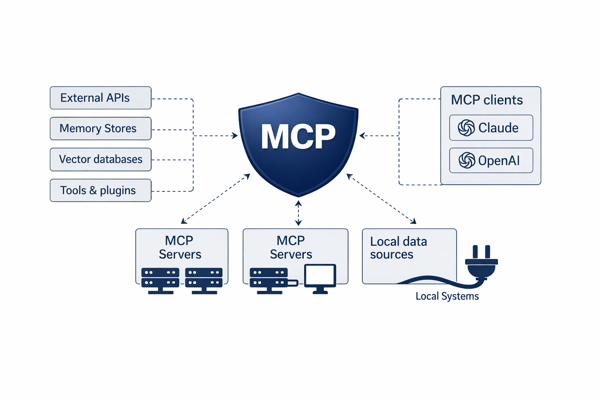

Summary
Model Context Protocol (MCP) standardizes how AI clients — like Claude or an OpenAI-based agent — discover and use context: local data sources, external APIs, memory stores, vector databases, and tools and plugins, all exposed through MCP servers. Standardizing that interface is genuinely valuable — it's what lets an agent built once integrate with many tools without bespoke connectors for each. It also means a vulnerability in the standard, or in how it's implemented, is no longer a single vendor's problem; it's shared across every MCP client and server that follows the spec. This chapter covers the MCP threat map and a reference Azure-native architecture that addresses it.
Core concepts

The MCP threat map
Risk maps to four layers, each with its own MCP-specific failure modes:
| Layer | What's at risk | Representative threats |
|---|---|---|
| Applications & agents | User/agent interaction with MCP-based apps | Lack of standard authorization and credential theft; tool poisoning and tool shadowing; session hijacking and context sharing |
| AI platform | The GenAI platform used by MCP services | Model supply-chain vulnerabilities; model tampering; insufficient model-scanning coverage |
| Data | Data leveraged by MCP consumers and producers | Exfiltration |
| Infrastructure | MCP hosting and development platform | OS exploits; improper network configurations |
MCP risk specifically targets four components: the MCP client, MCP server, and MCP host; the underlying LLM used by the MCP client; the resources (data sources, files) being shared; and the cloud infrastructure or developer environment the whole system runs on.
Tool poisoning and tool shadowing deserve a specific definition since they're MCP-native risks that don't have a direct analog in Chapters 1–6: tool poisoning is an attacker embedding malicious instructions inside a tool's description or metadata, which the calling LLM reads and follows as if it were legitimate guidance. Tool shadowing is a malicious tool registering itself with a name or description that impersonates a trusted tool, redirecting calls intended for the real one.
Architecture discussion — a reference Azure-native MCP deployment
The workshop maps specific OWASP MCP Top 10 risks (owasp.org/www-project-mcp-top-10) to concrete Azure-native controls in a sample provider workload:
Each component maps to specific OWASP MCP Top 10 risks the workshop calls out directly:
- MCP 01 (Stolen Token) / MCP 02 (Auth and RBAC) — addressed by requiring OAuth 2.1 at the APIM layer before any request reaches the MCP server.
- MCP 04 (Software Supply Chain Attacks) — addressed by storing secrets in Key Vault rather than embedding them in MCP server code or configuration.
- MCP 05 and 06 (Injection Prevention) — addressed by routing all traffic through APIM's content-safety and prompt-inspection policies, and by keeping communication on a private network.
- MCP 07 (Permanent Access) — mitigated by the same time-bound access-package model from Chapter 3, applied to MCP server-to-resource access.
- MCP 08 (Telemetry) — APIM provides telemetry and rate limiting at the gateway; Defender for Cloud and Sentinel provide security anomaly detection across the Azure services in the architecture.
- MCP 09 (Shadow MCP) — addressed the same way shadow AI is addressed in Chapter 4: discovery has to precede governance. An MCP server nobody registered is invisible to every control in this diagram.
- MCP 10 (Context Injection & Oversharing) — addressed by scoping what context an MCP server can retrieve and share per caller, rather than exposing a uniform, maximal context window to every client.
Key security considerations
- MCP's biggest security property is also its biggest risk: standardization. A vulnerability in a widely-adopted MCP server implementation, or in the protocol's auth model, has blast radius across every client that trusts it — not just one vendor's product.
- Tool poisoning bypasses traditional input validation entirely. The malicious content lives in tool metadata the LLM is expected to trust, not in user-supplied input a WAF or content filter would inspect.
- Shadow MCP servers are structurally similar to shadow AI (Chapter 4), but harder to detect — an MCP server can be stood up by a developer in minutes, with no equivalent of a SaaS app catalog to discover it against.
- A gateway (APIM) cannot substitute for authorization the MCP server itself must still perform. APIM enforces auth and rate limiting in front of the server; the MCP server's own validation of audience claims and per-resource access is still required behind it.
Recommended practices
- Require OAuth 2.1 for every MCP client-to-server connection; do not accept static API keys as a substitute for token-based auth with expiry.
- Route all MCP traffic through a gateway (APIM or equivalent) that provides auth, telemetry, rate limiting, and content-safety inspection in one place, rather than reimplementing these per MCP server.
- Treat MCP server discovery the same way you treat shadow AI discovery in Chapter 4: maintain a registry, and treat any MCP server not in that registry as an incident, not an oversight.
- Scope context sharing per caller rather than exposing a maximal, uniform context window — this is the direct mitigation for MCP 10 (context injection and oversharing).
- Store MCP server secrets in a managed vault (Key Vault or equivalent), never in server code or environment-variable defaults committed to source control.
Technologies referenced
- Azure API Management (APIM) — MCP gateway providing auth, telemetry, rate limiting, and content safety.
- Microsoft Entra ID — MCP server authentication via OAuth 2.1 and audience-claim validation.
- Azure Key Vault — MCP server secret storage.
- Azure AI Foundry — LLM hosting behind the MCP gateway.
- Microsoft Defender for Cloud and Microsoft Sentinel — anomaly detection across the MCP architecture's Azure services.
Key takeaways
- MCP's standardization is valuable and creates shared-blast-radius risk at the same time — a protocol-level or common-implementation vulnerability affects every adopter, not one vendor.
- Tool poisoning and tool shadowing are MCP-native attack patterns that live in tool metadata, not user input — traditional input validation does not catch them.
- A reference architecture built on APIM + Entra ID + Key Vault + Defender/Sentinel maps directly onto the OWASP MCP Top 10 risk categories the deck references (MCP 01, 02, 04, 05/06, 07, 08, 09, 10).